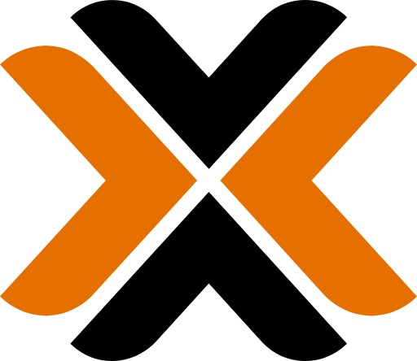
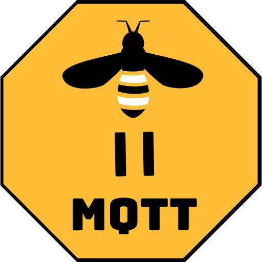
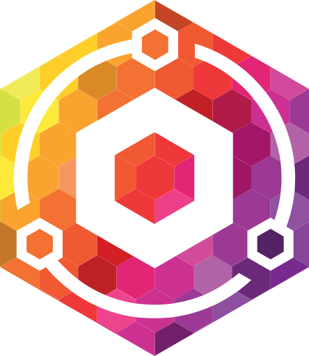

Home network and server stack
A local, reliable, and scalable setup that anchors smart home automation and lab projects on solid infrastructure.
Problem
Home devices were scattered across separate apps and protocols. Cloud dependency, imprecise automation timing, and weak observability made the system fragile. Without a centralized, local-first backbone, it was hard to build stable, expandable automations.
Goal
The goal was a home stack where services run isolated, every device can be controlled locally, and remote access is secure. Reliability, data ownership, and a single control plane were non-negotiable.
Infrastructure & Services
The stack is anchored by Proxmox VE, providing a virtualization layer for service isolation and recovery. Below are the key services that form the backbone of this ecosystem:

Proxmox VE
Hypervisor that separates VMs and enables snapshots for quick recovery and testing.

Home Assistant
The automation brain unifying Hue, IKEA, Sonoff, and custom ESP32 devices.

Zigbee2MQTT
Stable local device communication engine for Zigbee devices without cloud dependency.

TrueNAS
Centralized data storage, backups, and media assets with ZFS reliability.

Vaultwarden
Secure, self-hosted credential storage for internal services and project secrets.

Tailscale
Zero-config Mesh VPN for secure remote access to the home lab from anywhere.

Plex
High-performance media streaming across all local and remote devices.
RustDesk
Self-hosted remote desktop solution for managing headless machines on the network.

Pi-hole
Network-wide ad blocking and local DNS resolution for faster, cleaner browsing.

Nginx Proxy Manager
SSL termination and reverse proxy management for custom machan.hu subdomains.
The Bambu Lab printer and Hue, IKEA, and Sonoff ecosystems are all integrated under a single control plane, keeping real-time status and automation logic in one place.
Result
A stable, maintainable, and future-proof home infrastructure where services are separated yet operate as one system, updated regularly. It delivers daily smart home reliability while supporting development and hobby projects with confidence.